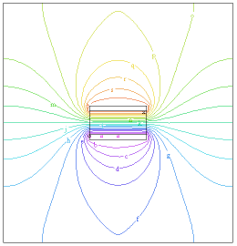

|
plate_capacitor |

  
|
|
plate_capacitor |
|
{ PLATE_CAPACITOR.PDE
This problem computes the field around a plate capacitor.
(adapted from "Fields of Physics on the PC" by Gunnar Backstrom)
}
title 'Plate capacitor'
variables u
definitions Lx=1 Ly=1 delx=0.5 d=0.2 ddy=0.2*d Ex=-dx(u) Ey=-dy(u) Eabs=sqrt(Ex^2+Ey^2) eps0=8.854e-12 eps DEx=eps*Ex DEy=eps*Ey Dabs=sqrt(DEx^2+DEy^2) zero=1.e-15
equations u : div(-eps*grad(u)) = 0
boundaries Region 1 eps=eps0 start(-Lx,-Ly) Load(u)=0 |
 |
line to (Lx,-Ly) to (Lx,Ly) to (-LX,Ly) to close
start(-delx/2,-d/2)
value(u)=0
line to (delx/2,-d/2) to (delx/2,-d/2-ddy) to (-delx/2,-d/2-ddy)
to close
start(-delx/2,d/2+ddy)
value(u)=1
line to (delx/2,d/2+ddy) to (delx/2,d/2) to(-delx/2,d/2)
to close
Region 2
eps = 7.0*eps0
start(-delx/2,-d/2)
line to (delx/2,-d/2) to (delx/2,d/2) to(-delx/2,d/2)
to close
monitors
contour(u)
plots
contour(u)
surface(u)
vector(dx(u),dy(u))
end
Page url: index.html?applications_electricity_plate_capacitor.html